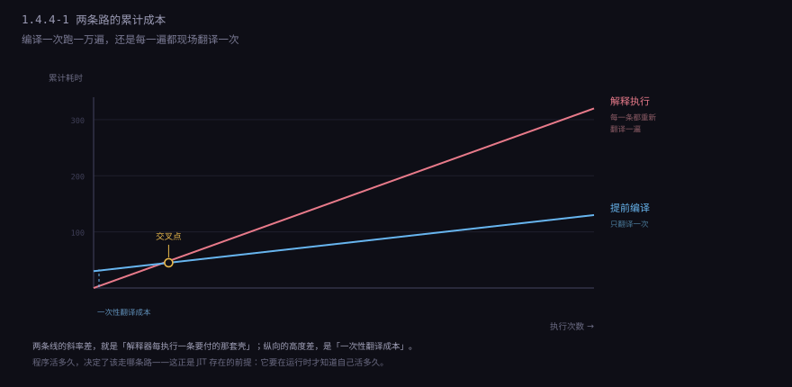
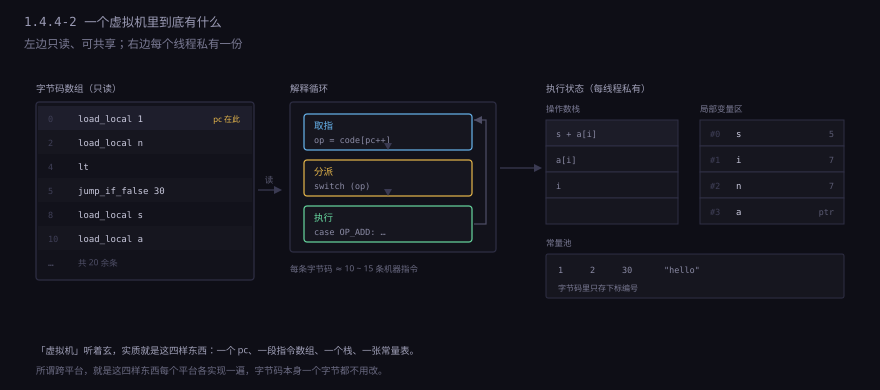
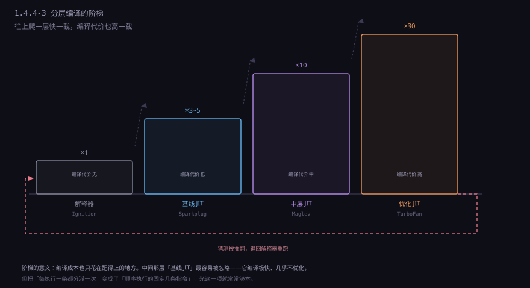
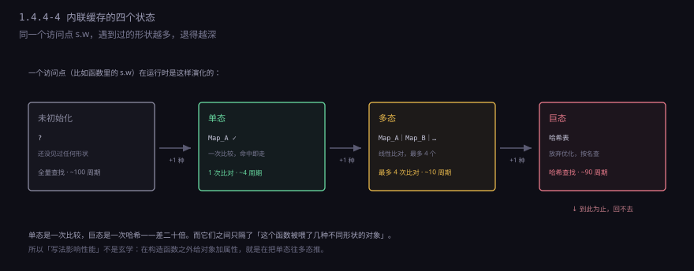
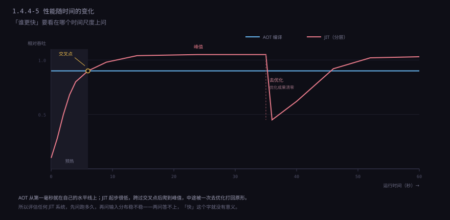

约 0.8 万字 · 5 张图 · 读完你能说清解释执行到底慢在哪一个环节， JIT 靠什么信息反超静态编译， 以及为什么同一个程序「第一次跑慢、跑一会儿变快、偶尔又突然卡一下」
先把两条路的成本结构画出来，后面所有细节都挂在这张图上。

编译版的代价是一次性的：翻译一次，之后跑一万遍都是机器码。 解释版没有起步费，但每一轮都要重新翻译一遍—— 注意是每一「条指令」都要重新翻译，不是每一「轮循环」。 这就像请翻译：一种是先把整本书译成中文再读，另一种是每读一句都要现场口译一句， 而且同一句话出现十次就译十次。
所以「解释执行慢」不是慢在算术上，算术部分完全一样—— 都是往 ALU 里塞两个数。慢在每执行一条指令前后那一整套准备工作， 以及这套准备工作把 CPU 最擅长的东西全废掉了。 下一节专门算这笔账。
还有一个不该忽略的维度：可移植性。 编译版翻译出来的是某一台机器的指令，换架构就得重编。 解释版翻译的是「字节码」，只要目标机器上有个能读字节码的解释器， 同一份字节码在哪都能跑。这就是 Java 当年那句 write once, run anywhere 的技术底座， 也是「一次编译、到处运行」和「一次编写、到处翻译」这两句口号的真实差别。
解释器的核心是一个死循环，通常只有十几行：
while (1) {
op = code[pc++]; // 取一条字节码
switch (op) { // 分派
case OP_ADD: ...; break;
case OP_LOAD: ...; break;
...
}
}这段代码本身没什么问题，问题在它每执行一条字节码就要做一次完整的 「取指—分派—跳转—返回」。算一下一条字节码大约要多少条机器指令：
| 步骤 | 机器指令数（大约） | 说明 |
|---|---|---|
| 读出操作码，推进指针 | 3～4 | 访存 + 自增 + 越界检查 |
| 查分派表，间接跳转 | 2～3 | 一次间接跳转，分支预测器基本猜不中 |
| 读出操作数 | 2～5 | 字节码里的操作数是编码过的，要解码 |
| 做真正的事 | 1～3 | add 就一条，这才是「有效工作」 |
| 跳回循环头 | 1 | 又一次跳转 |
合计大约 10～15 条机器指令，去干一件本来一条指令就能干完的事。 这就是解释器普遍比编译代码慢 5～10 倍的来源—— 不是算术慢，是包裹在算术外面的壳太厚。
更糟的是间接跳转。CPU 靠分支预测提前取指令，
而 switch 展开成的跳转表是「跳到哪取决于 op 的值」，
这是一个间接分支，预测器只能靠历史猜测。
字节码序列里 op 的变化没什么规律，预测准确率掉下来，
流水线就得冲刷重来——前面几节讲过，一次预测失败十几拍的代价，
足以吃掉十几条指令的成果。
这条路上有一个经典优化，叫直接线程化（direct threading）： 把「取 op、跳转、再跳回来」改成「每个处理函数的末尾直接跳到下一个处理函数的地址」， 省掉一次跳回循环头。GCC 里靠「标签即值」（computed goto）实现， 标准 C 写不出来。能省 20%～30%，但改不了本质—— 壳还是比核厚。
还有一个更根本的损失：解释器看不见跨指令的优化机会。
它一次只能看到一条字节码，所以：
常量折叠做不了（两条相邻的 push 3、push 4 它不知道可以合成 7）、
公共子表达式没法复用、循环里的不变量没法提到外面、
寄存器分配完全谈不上（操作数都在栈上，每次都得访存）。
机器码版本里编译器会做的那些事，解释器一件也做不到。
这最后一条才是关键。前面几条是常数倍的慢，靠工程能磨掉一半； 后面这条是结构性的，只能靠「先编译再跑」解决。 于是所有认真的实现都走向同一个答案：让它编译。
第一个问题：既然要解释，为什么不直接解释源文本，非要先转成字节码？
因为解析源文本比执行还贵。
把 a + b * 2 变成「取 a、取 b、压 2、乘、加」这一步，
要做词法分析、语法分析、建语法树——1.4.2 讲过，
这是整条编译链里最费时的一段（现代编译器里前端常常占一半以上时间）。
如果每执行一次都要重做一遍词法语法分析，那慢的就不是 10 倍，是 100 倍。
所以折中：解析只做一次，把结果存成字节码。 之后每次执行都是「读一个字节、跳过去、干活」， 跳过了最贵的分析阶段，只留下最便宜的分派阶段。 字节码本质上是「语法树被压平成一维数组」—— 结构信息已经固化在指令序列里了，不用再分析。
// 源码
let s = 0;
for (let i = 0; i < n; i++) s += a[i];
// 字节码（栈机风格，示意）
push 0 // s
store_local 0
push 0 // i
store_local 1
loop: load_local 1
load_local n
lt
jump_if_false end
load_local 0
load_local a
load_local 1
get_elem
add
store_local 0
load_local 1
push 1
add
store_local 1
jump loop
end:这段字节码有 20 来条，源码只有两行。 看起来膨胀了好几倍，但每一条都是定长的、解码成本极低的， 而且指令里已经没有了「变量名」「运算符优先级」这些概念， 只剩「压栈」「取局部变量第 n 号」「跳转」。
顺便说清两件常被混淆的事。 字节码不是机器码：它不对应任何真实 CPU 的指令集， 只能被解释器或 JIT 消费。 虚拟机也不是模拟一台硬件：它不模拟寄存器、不模拟中断， 只是一段能执行字节码的普通程序。 「虚拟机」这个词是历史包袱，听着玄，实质就是「一个 while 循环 + 一张指令表」。
也有不走字节码的：早期 Ruby 和现在的 CPython 3.11 之前都是「遍历语法树执行」（树遍历解释器）。 它的好处是不用设计指令集，坏处是每个节点都是一次指针追逐 + 虚函数调用， 局部性极差。CPython 3.11 转向字节码 + 特化指令之后快了 25% 左右， 靠的就是把「指针追逐」换成「顺序读数组」。
字节码指令怎么表达「把两个数加起来」？两种流派。
栈机：操作数默认在栈顶。加法指令不带参数， 它隐含地「弹出两个、压入一个」。上面那段字节码就是栈机风格。 好处是指令极短（很多只有 1 字节）， 坏处是每条指令都在和栈打交道—— 压两个数、加、弹结果，一共三次栈读写，而这三次读写本来可以完全不发生（值直接留在寄存器里）。 这个开销有个专门的名字：栈流量（stack traffic）。 学术测量里，栈机执行一条指令平均要多做 1～2 次栈访存， 在热点代码上这是相当可观的浪费。
寄存器机：指令里写明「从哪几个虚拟寄存器取、结果放哪个」。 指令变长了（要多带两三个操作数编号），但条数少、栈流量为零。 Lua 5.0 起、Dalvik（早期 Android）、V8 的 Ignition 都是寄存器机。 Android 从 Dalvik 换到 ART 时做过对比，同样的 Java 代码编译成寄存器字节码后 指令条数少了大约 30%。

栈机还有一个隐藏优势：字节码短，所以体积小、缓存友好、传输便宜。
Java 的 .class 文件能在网络上传，Lua 的字节码能塞进嵌入式设备，
都靠这一点。而寄存器机的字节码要到 JIT 阶段才被还原成机器码，
体积大一点无所谓，因为它的目标本来就是「快点变成机器码」。
两种设计对应两种预期寿命：如果这段代码大概只会被解释执行，选栈机；如果预期很快会被 JIT，选寄存器机。 V8 从「栈机 + 全编译」改成「寄存器机 + 分层」时，就是认了这个账。
现在矛盾很清楚了：解释慢，编译贵。 但真实的程序有一个特性可以救场——执行时间极度不均匀。
经验规律是：一个程序里 90% 的时间花在 10% 的代码上， 甚至更极端。循环体、内层函数、频繁调用的工具函数， 反复跑几百万次；而初始化代码、错误处理分支、命令行解析，跑一次就完了。 把整程序编译一遍，绝大部分编译时间浪费在只跑一次的地方。
所以答案很自然：先解释着跑，一边跑一边数，谁跑得多就编译谁。 计数器有两种：
| 计数器 | 数什么 | 什么时候加一 |
|---|---|---|
| 方法调用计数器 | 这个函数被调了多少次 | 进入函数时 |
| 回边计数器 | 这个循环往回跳了多少次 | 执行到循环末尾的跳转时 |
两个都要，是因为单靠调用计数会漏掉一种情况：
一个只被调用一次、但里面有个跑一亿次的循环的函数。
这种代码在真实世界里到处都是（main 里一个大循环）。
回边计数器专门抓它。
阈值通常在一万到十几万之间。V8 早期的 Full-codegen 一上来就编译（不解释），
现在的 Ignition 是解释执行，函数被调用若干次后才进基线编译器。
JVM 的 -XX:CompileThreshold 默认是 10000 次调用。
数字都是拍出来的，靠实测调——
阈值低了，编译线程抢 CPU、编译了一堆没用的；阈值高了，热代码迟迟不快。
这里有个细节容易漏：如果循环跑到一半才达到阈值，怎么办？ 等这轮循环跑完再换版本，那可能还要跑几千万次。 所以有栈上替换（OSR，on-stack replacement）： 在循环中途直接把当前栈帧换成优化版本的栈帧， 循环变量、临时值一个个搬过去，然后从当前这条指令继续跑。 这是 JIT 里最麻烦的机制之一——要能精确描述「解释器栈帧里的每一个值， 对应优化后机器码里的哪个位置」。
只有一个优化编译器是不够的。优化编译很贵（可能几十毫秒）， 而很多「有点热但不够热」的代码配不上这个价。 于是现代运行时都做成阶梯：

各家的层数和名字不同，结构几乎一样：
| 层 | V8（JS） | HotSpot（Java） | 做什么 |
|---|---|---|---|
| 0 | Ignition | 解释器 | 解释字节码，收集类型信息 |
| 1 | Sparkplug | C1（客户端编译器） | 快速出一版机器码，几乎不优化 |
| 2 | Maglev | — | 中等优化，编译时间可控 |
| 3 | TurboFan | C2（服务端编译器） | 重优化：内联、逃逸分析、向量化 |
基线层的存在有个不那么显然的理由：解释器的开销是「每执行一条指令都付一次」， 而基线编译的开销是「一次性付清，之后零」。 哪怕基线编译器只做最笨的翻译（一条字节码对一条机器码，不做任何优化）， 也能把那个 10～15 条的壳砍到 2～3 条。 对一个要跑十万次的循环，这笔买卖稳赚。
更要紧的是它顺手把「分派」这件事干掉了：
基线编译过的代码里不再有 switch 和间接跳转，
每条字节码变成了固定的几条机器指令，顺序往下走，
分支预测器终于能正常工作了。
这一项收益常常比「少做几次栈读写」还大。
还有一层容易被忽略的成本：编译本身要占 CPU，而且要跟应用抢。 所以 JIT 编译器通常在后台线程跑，编译期间应用继续用旧版本执行； 编译完了再在某次调用时换过去。这带来一个副作用—— 你会看到「程序跑了三秒突然快了一截」，那就是后台编译完成、代码切过去了。
前面几节讲的都是「怎么把字节码变成机器码」。但 JS、Python 这类语言还有一道额外的坎： 类型是运行时才定的。
function area(s) { return s.w * s.h; }
编译这行时，编译器不知道 s 是什么。
s.w 可能是「结构体第 8 字节的一个整数」，
也可能是「查哈希表、找不到就调 __getattr__」。
如果每次都要走完整的动态查找（哈希、原型链、getter），
那这条语句比 C 慢几十倍，JIT 再厉害也没用。
解法叫内联缓存（inline cache，IC）。 思路极其朴素：同一个访问点，绝大多数时候遇到的是同一种类型，那就把上次的结果记住。

要做到「比形状」，语言得先有「形状」这个概念。
V8 里叫 Map（隐藏类），SpiderMonkey 叫 shape，JSC 叫 Structure。
它们记录的是「这个对象有哪些属性、各在第几个偏移、什么类型」。
两个对象只要属性布局一样，就共享同一个隐藏类——
{x: 1, y: 2} 和 {x: 5, y: 9} 共享，但
{y: 2, x: 1} 就是另一个类（属性顺序不同）。
于是 s.w 的优化版本变成这样：
; 假设缓存的隐藏类是 Map_A，w 在偏移 8，是 SMI（小整数）
cmp [s + 0], Map_A ; 形状对不上就跳走去优化
jne deopt
mov rax, [s + 8] ; 直接按偏移取，一次访存
两次访存（一次查形状、一次取字段）就干完了。 对比解释器要走的那条路——查属性名哈希、沿原型链找、检查是不是 getter—— 差距是几十倍。
这件事的推论很重要：JS 的对象属性顺序和形状稳定性，直接影响性能。
在构造函数之外给对象加属性（obj.newField = 1）会切换隐藏类，
让原本单态的访问点变成多态甚至巨态。
所谓「写法影响性能」，绝大部分不是玄学，是隐藏类的形状在变。
tp_version_tag），
方法调用有「特化指令」（3.11 起），思路和内联缓存一致：
记住上次的答案，下次先验证前提还在不在。
所有动态语言要跑快，都得走这条路。
上面那段代码里有个 jne deopt。这个 deopt 是整个 JIT 体系里最危险的地方。
优化编译器做的所有事，本质都是在赌：
赌 s 的形状永远是 Map_A，赌 s.w 永远是整数，
赌这个 if 永远走 true 分支，赌这个函数不会被重新赋值。
赌赢了，代码快得离谱；赌输了，必须完好无损地退回去。
「完好无损」是难点。优化后的代码里，变量在寄存器里、 对象被拆散了、循环被展开了、有些值被常量替代了—— 而解释器需要的是「每个变量都在栈帧的固定位置」。 所以编译器在生成优化代码时，还要同时生成一张去优化映射表： 在每一条可能失败的指令处，记录「此刻解释器栈帧应该长什么样、 哪个寄存器对应哪个变量、对象被拆成了哪几块」。
一旦触发，运行时做的事是：暂停在当前指令、按映射表重建一个解释器栈帧、 把值一个个填进去、然后从对应的字节码位置继续解释执行。 这个过程对上层语言完全透明——你的 JS 代码看不到任何异样， 只是突然慢了几十倍。
这种「慢了几十倍」是可以观测到的：一段运行平稳的代码， 因为某个冷门分支被触发了一次，之后就一直很慢， 因为那个函数已经被标记为「不可靠」，从此只能用解释器跑。 这就是「跑一会儿突然卡住再也不恢复」的常见成因之一， 尤其常见于「99% 的输入是数字，某天来了一个字符串」的场景。
所以 JIT 的复杂度不在「怎么优化」，在「猜错了怎么撤回」。 这也是为什么写一个能跑的 JIT 只要几个月， 写一个生产可用的要几年——几乎全部时间都花在去优化的正确性上。
有了「可以赌 + 赌输能撤」这个前提，JIT 编译器能做的事比 AOT 编译器更多。 几个典型的：
激进内联。
把被调函数整个塞进调用点，省掉调用开销，更重要的是把两段代码放进同一个优化视野——
之后才能做常量传播、死代码消除。
HotSpot 的内联阈值是 35 字节码（-XX:MaxInlineSize），
但「热方法」可以放宽到 325 字节。
小函数被内联后，原本存在的边界消失了，优化空间成倍放大。
逃逸分析 + 标量替换。 如果编译器能证明一个对象不会逃出这个函数（没被返回、没被存进全局、没传给不认识的外部函数）， 它就可以把这个对象整个删掉：不分配、不 GC， 直接把字段拆成几个局部变量放寄存器里。 这条优化对 Java 和 JS 意义巨大——那些「为了链式调用而创建的小对象」 本来要给 GC 添很多麻烦，逃逸分析之后一个字节都不分配。
基于真实分支概率的重排。
AOT 编译器只能靠静态启发式猜「这个 if 大概走哪边」
（比如「错误处理分支不常走」）。
JIT 有真实计数器：它知道这个分支 99.97% 走 true。
于是可以把 true 分支排成直线、把 false 分支甩到远处，
让指令缓存和分支预测都友好。
这就是 PGO（profile-guided optimization）想做的事，
只不过 JIT 是白拿的，AOT 要额外跑一轮训练。
按 CPU 特性生成代码。
运行时能读 cpuid，知道这台机器有没有 AVX-512、有没有 BMI2。
AOT 编译的二进制要兼容所有机器，只能按最保守的指令集编译（或者打包多份分发）。
JIT 可以现场生成一份只为这台机器优化的代码。
类型特化。 同一个函数，如果只被整数调用过，就生成一份「参数都是整数」的版本， 里面所有类型检查全部消失；如果后来来了浮点数，再生成第二份。 这叫多版本或特化编译， 在动态语言里是最大的性能来源。 Julia 的多重分派、PyPy 的追踪 JIT，走的都是这条路。
注意这一条和静态语言的对比：C 编译器看到 int 就知道是整数，
不需要检查也不需要特化；而动态语言要先跑一段才知道。
区别在于「什么时候知道」，不在于「知道多少」。
一旦知道了，JIT 手里的信息比 AOT 多——
它知道的是这个程序在这台机器上、这批输入下的真实情况，
而 AOT 只知道「类型上可能是什么」。
这句话在十几年前是异端，现在有实测支撑： 长时间的、负载稳定的程序，JIT 版本的峰值性能常常超过同等的 C 程序。 原因就是上一节列的几条，归结起来一句话：
AOT 编译在「信息最少」的时刻做了决定，JIT 在「信息最多」的时刻做决定。
AOT 编译时能看到的只有源码。它不知道：
这个虚函数实际只会调用到哪一个实现、这个分支实际走哪边、
void* 实际指向什么、这台机器的缓存多大。
JIT 全都知道，因为程序已经跑过了。
一个具体例子：C 里的回调。
qsort(arr, n, sizeof(int), cmp) 里那个 cmp 是函数指针，
每次比较都要间接调用一次——编译器没法内联它，因为编译时不知道会传进来什么。
而 JIT 在跑了几万次之后，发现「每次传进来的都是同一个函数」，
于是把它内联掉，连间接跳转都省了。
同样的 C 代码，如果加 PGO 训练一轮，也能达到类似效果；
不加的话，JIT 就这么白赚了一次优化。
但这句话有个必须补上的前提：「长时间、负载稳定」。 峰值性能是在预热完成、假设都成立、输入分布不变的前提下测出来的。 换个输入分布、换台机器、程序只跑两秒——这些优势可能全部消失， 甚至变成劣势。所以真实的性能对比从来不只看峰值， 还要看达到峰值需要多久和峰值能维持多久。
三条代价，每一条都在生产环境里真实咬过人。
一、预热。 程序跑起来的前几百毫秒到几秒，一直在解释执行 + 编译， 性能可能只有峰值的十分之一。 对一个常驻服务，这不是问题——启动一次跑几个月。 对一个 CLI 工具，这是致命的：总共就跑 200 毫秒，全程都在预热期， JIT 一个字节的优化都没享受到，还多付了编译线程的开销。 这就是为什么命令行工具几乎全是 AOT 编译的。
二、内存。 分层编译意味着同一段代码在内存里有好几份： 字节码一份、基线机器码一份、优化机器码一份， 还有 profile 数据（类型记录、分支计数）。 JIT 编译器的代码本身也要常驻（几十 MB）。 一个「Hello World」的 JVM 进程占 30 MB 起步，绝大部分不是你的程序。 在容器和 Serverless 场景里，这笔固定开销很要命。
三、延迟抖动。 这是最难查的一种。编译在后台线程跑，会和应用抢 CPU； 优化编译一份大函数可能花上百毫秒，这段时间如果编译线程抢到了核， 应用的 p99 延迟就出现一个尖峰。 更糟的是 GC——JIT 优化后的代码里对象少了，但编译器和 profile 数据本身要占内存， 有时反而让 GC 更频繁。
所以对延迟敏感的系统（交易撮合、实时音视频）常常主动关掉 JIT 的最顶层， 或者用 AOT 编译好的版本： 宁可慢一点，也要稳。 这也是「峰值性能」和「可预测性」这对矛盾最典型的体现。

这套机制演化到今天，两条路的边界已经很模糊了。
AOT 在学 JIT：
编译时插桩跑一轮真实负载，把 profile 存下来，正式编译时按 profile 优化。
GCC/Clang 的 -fprofile-generate / -fprofile-use 就是这个，
效果常常能提升 10%～20%。
更进一步的是 BOLT——直接对已经链接好的二进制做重排，
按采样到的执行频率重新摆放代码块，让热代码挤在一起。
这些做法和 JIT 的思路完全一样，只是把「运行时」提前到了「构建时」。
JIT 在学 AOT： 为了让启动更快，出现了「编译期就生成机器码、运行时只做少量修补」的方案。 GraalVM 的 native-image 把 Java 程序整个 AOT 编译成原生可执行文件， 启动时间从秒级降到毫秒级，代价是放弃了运行时的动态类加载和部分反射。 Hermes 把 JS 提前编译成字节码打进 App，省掉启动时的解析。 .NET 的 ReadyToRun、Native AOT 也是同一个方向。
还有一个折中正在流行：把 JIT 的产物缓存起来。 第一次跑的时候正常 JIT，把编译好的机器码和 profile 存到磁盘； 下次启动直接加载，跳过预热。 JVM 的 CDS/AppCDS、V8 的 code cache 都是这个思路。 这等于让「预热」这件事只发生一次—— 在服务端和移动端都很有价值。
最后回到那个问题：为什么 JS 也能越跑越快？ 不是因为它变「编译型」了，而是因为它在运行时补上了编译时缺的信息。 解释器负责快速启动和收集情报，JIT 负责在情报足够时下注， 去优化负责在下错注时体面撤退。 三件事各管一段，合起来就有了「启动快、峰值高」这个看起来矛盾的结果。
到这里，1.4 章就走完了：从一条指令的字节，到一行 C 的翻译，
到一堆 .o 的拼接，再到「根本不生成机器码」的另一条路。
这四节合起来是一个完整的问题：「人写的东西，到底怎么变成 CPU 能执行的东西」。
答案是四种不同的时刻、四种不同的代价。
下一章换个角度：不管程序是被编译出来的还是被 JIT 出来的， 它真正要处理的是数据。 数据在内存里怎么摆、摆在哪儿，决定了同样一件事是几纳秒还是几毫秒。 从四种最基础的装东西的方式讲起。
main 里的大循环就是典型），回边计数专门抓这种。void* 实际类型、CPU 支持哪些指令集。典型例子是 qsort 的比较函数被 JIT 内联掉。